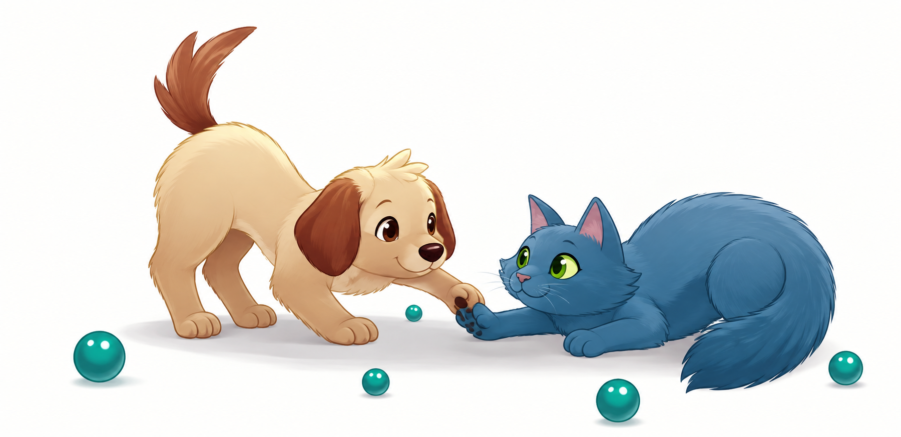

Descarte responsável perto de você
Informe seu CEP e encontre o ponto de coleta mais próximo
O EcoPatas cruza o seu CEP com a rede de pontos de coleta cadastrados e mostra, no mapa, qual está mais perto de você — com endereço, horário de funcionamento e o que cada ponto recebe.
Projeto em demonstração: os pontos exibidos são exemplos fictícios
usados para validar a experiência. Substitua a base em js/pontos.js pelos
registros reais antes de publicar.

Resultado da busca
O ponto de coleta mais próximo de você
Mapa da região
- Sua região aproximada
- Ponto mais próximo
- Outros pontos
A sua posição no mapa é aproximada: usamos o centro do CEP informado, não o seu endereço exato. Mapas © OpenStreetMap.
Todos os pontos desta busca
Nenhum ponto desta busca aceita o material selecionado.
Como funciona
Três passos até o descarte certo
Sem cadastro e sem guardar a sua localização: todo o cálculo acontece no seu navegador.
-
1
Digite o CEP
Buscamos o endereço e as coordenadas aproximadas do CEP em bases públicas (BrasilAPI e ViaCEP) e, quando preciso, convertemos o endereço em coordenadas com o OpenStreetMap.
-
2
Comparamos as distâncias
Calculamos a distância em linha reta até cada ponto de coleta cadastrado e ordenamos a lista do mais perto para o mais distante.
-
3
Escolha e leve seus itens
Veja endereço, horário, contato e quais materiais cada ponto aceita. Dá para abrir a rota no mapa em um toque.
Impacto
Uma rede de pontos, um destino certo para cada material
Cada item descartado no lugar correto evita a contaminação do solo e da água e devolve matéria-prima para a cadeia produtiva. Escolher o ponto mais próximo também reduz o deslocamento — e é por isso que o EcoPatas começa sempre pela distância.
- —pontos cadastrados
- —tipos de material aceitos
- —cidades atendidas
Números calculados em tempo real a partir da base atual do projeto (dados de demonstração).
Tem um ponto de coleta para cadastrar?
ONGs, pet shops, clínicas veterinárias, condomínios e órgãos públicos podem entrar na rede. Basta enviar nome, endereço, horário de funcionamento e os materiais aceitos.
Quero cadastrar um ponto